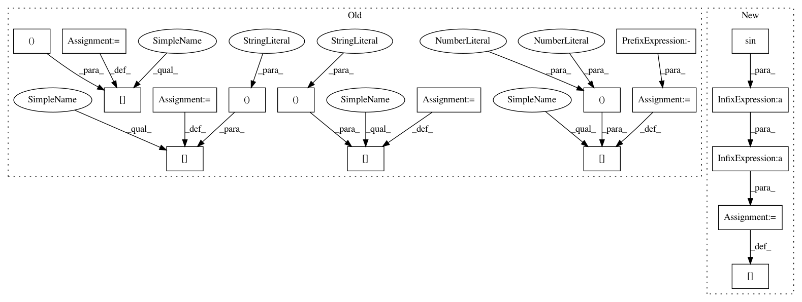

071fb5fb20683946a33f40d28af466f8e9ffc1bd,liegroups/torch/so2.py,SO2,left_jacobian,#Any#Any#,41
Before Change
jac_large_angle = phi.__class__(
len(large_angle_inds), cls.dim, cls.dim)
jac_large_angle[:, 0, 0] = A
jac_large_angle[:, 0, 1] = -B
jac_large_angle[:, 1, 0] = B
jac_large_angle[:, 1, 1] = A
jac[large_angle_inds] = jac_large_angle
return jac.squeeze_()
After Change
if len(large_angle_inds) > 0:
angle = phi[large_angle_inds]
s = angle.sin()
c = angle.cos()
A = (s / angle).unsqueeze_(dim=1).unsqueeze_(
dim=2).expand_as(jac[large_angle_inds]) * \
torch.eye(cls.dim).unsqueeze_(dim=0).expand_as(
jac[large_angle_inds])
B = ((1. - c) / angle).unsqueeze_(dim=1).unsqueeze_(
dim=2).expand_as(jac[large_angle_inds]) * \
cls.wedge(phi.__class__([1.]))
jac[large_angle_inds] = A + B
return jac.squeeze_()
@classmethod
In pattern: SUPERPATTERN
Frequency: 3
Non-data size: 18
Instances
Project Name: utiasSTARS/liegroups
Commit Name: 071fb5fb20683946a33f40d28af466f8e9ffc1bd
Time: 2017-10-17
Author: clement.leopold@gmail.com
File Name: liegroups/torch/so2.py
Class Name: SO2
Method Name: left_jacobian
Project Name: utiasSTARS/liegroups
Commit Name: 071fb5fb20683946a33f40d28af466f8e9ffc1bd
Time: 2017-10-17
Author: clement.leopold@gmail.com
File Name: liegroups/torch/so2.py
Class Name: SO2
Method Name: left_jacobian
Project Name: nipy/dipy
Commit Name: ede16d13e33e1fa0708e2547abee9a9c7dace1d1
Time: 2016-08-29
Author: rafaelnh21@gmail.com
File Name: dipy/reconst/fwdti.py
Class Name:
Method Name: nlls_fit_tensor
Project Name: nipy/dipy
Commit Name: acdb39c2f40fa90a033e895f09d8d02b02e85e9b
Time: 2016-08-29
Author: rafaelnh21@gmail.com
File Name: dipy/reconst/fwdti.py
Class Name:
Method Name: nlls_fit_tensor